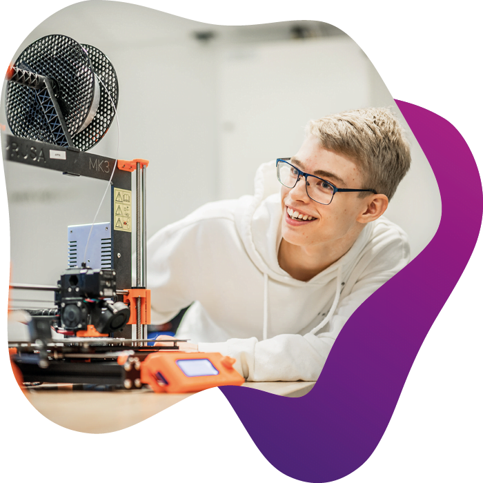

Vårt teknikgymnasium i Skövde
NTI Gymnasiet Skövde är ett teknikgymnasium som genomsyras av trygghet, modern teknik och hög IT-kompetens. Sommaren 2022 flyttade vi till helt nyrenoverade, centrala lokaler på John Grönvalls plats som är perfekt anpassade efter våra program och utbildningar.
Tre år – många möjligheter
Som elev hos oss kommer du att gå på program som utmanar dig, som får dig att tänka och växa som person. Våra lärare har hög kompetens och erfarenhet inom mjukvarudesign och programmering och utvecklar sig ständigt för att på bästa sätt möta elevers olika behov. Skolan har också en internationell mångfaldsprägel genom utbildningen International Baccalaureate Diploma Programme, där all undervisning sker på engelska. Dessutom har vi ett makerspace utrustat med den senaste tekniken. Där kan du testa på 3D-printing, VR/AR och robotteknik för att bli redo för framtiden.

Framtidens innovationer börjar här
NTI Gymnasiet är Sveriges ledande gymnasieskola inom tech, science och IT. På över 20 platser runt om i landet gör våra elever sig redo för en digital värld i snabb förändring. I höst är kanske du en av oss. Oavsett om du väljer att plugga vidare eller börja arbeta direkt efter examen kommer du att ha nytta av din aktuella kunskap och erfarenhet från att använda den allra senaste tekniken. Du kommer att vara vaken och observant på ny forskning och heta trender. Forma din egen framtid idag, var med och utveckla samhället imorgon.